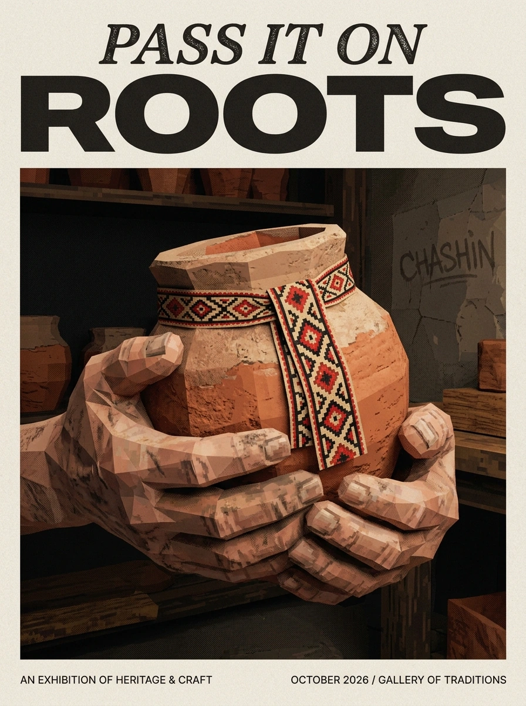
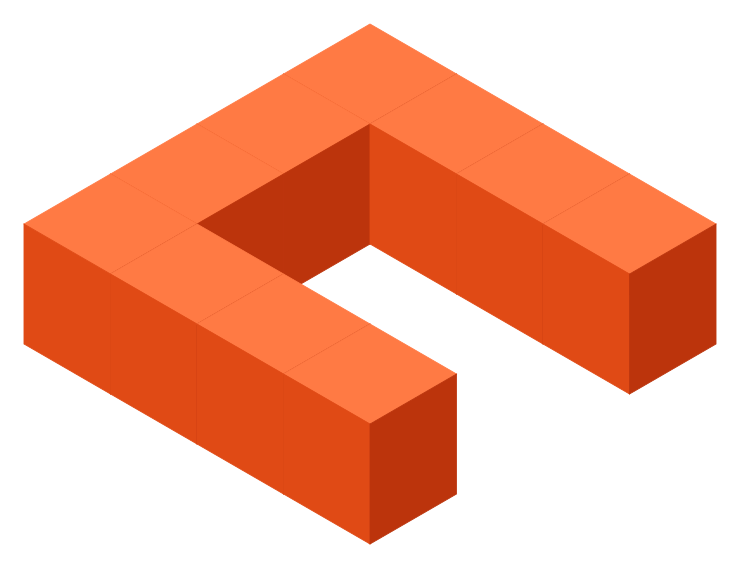
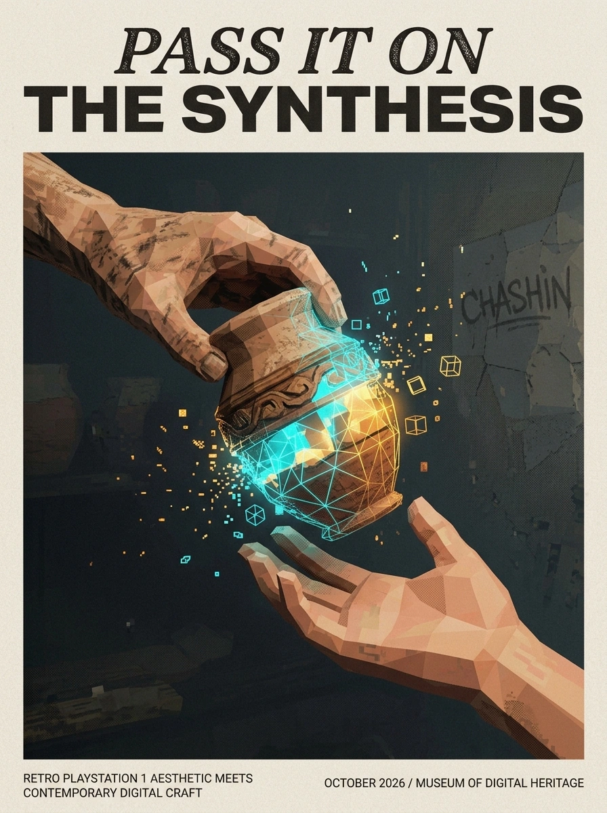
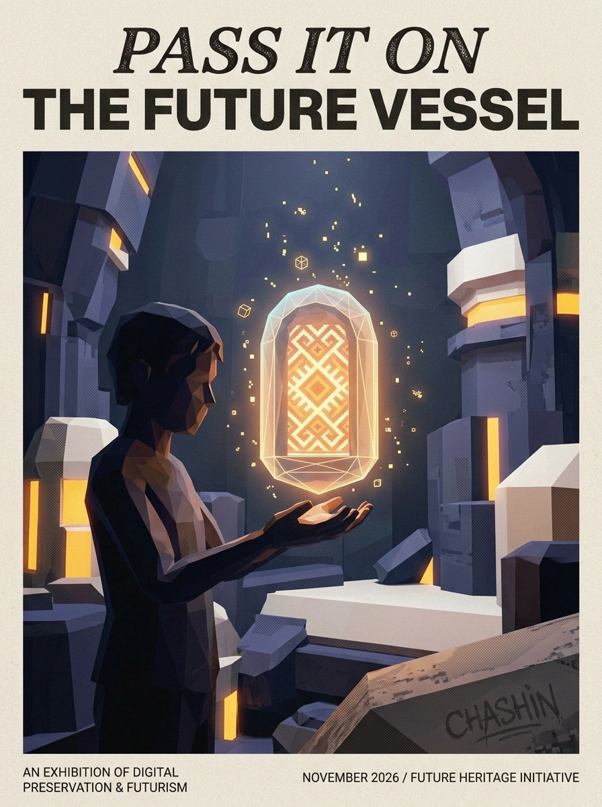
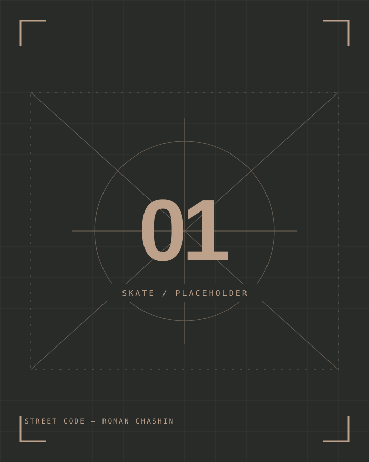
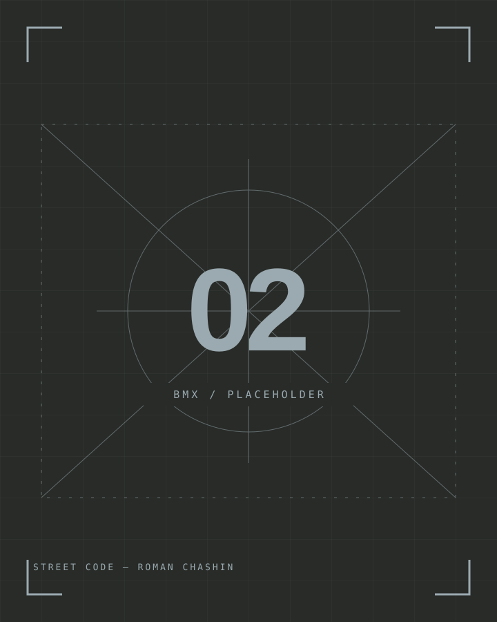
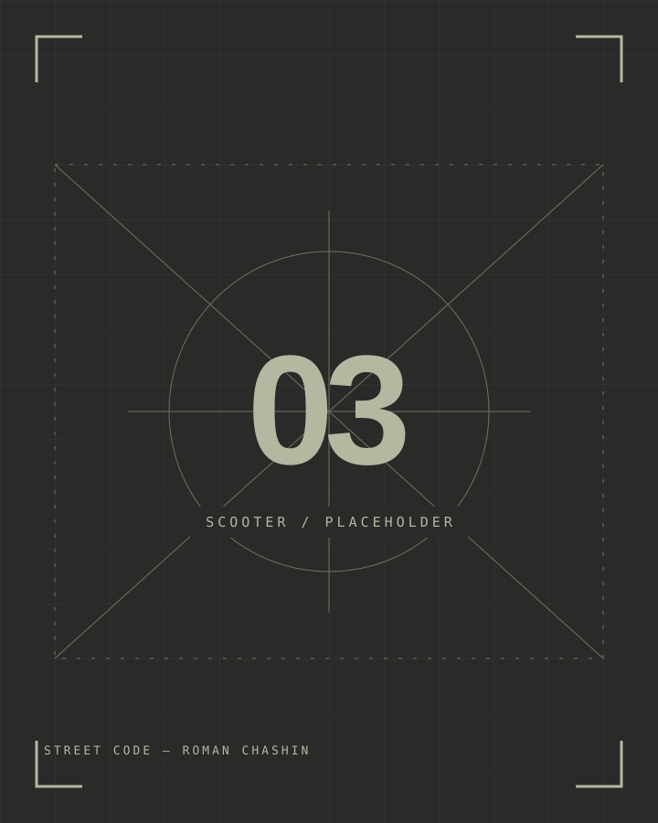
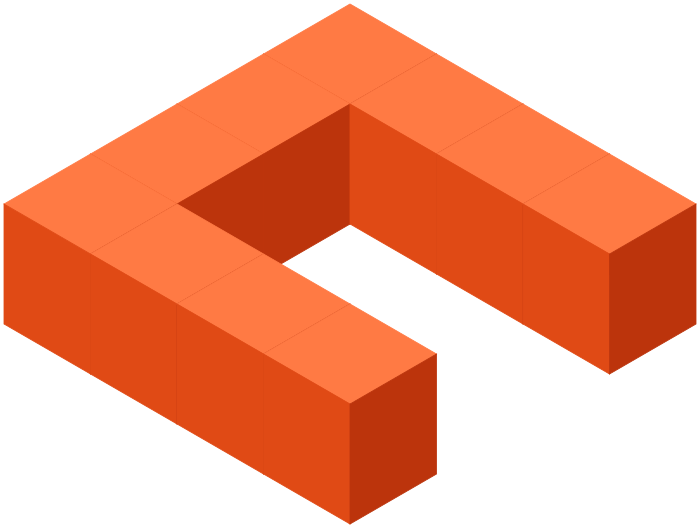

01
Исток и РемеслоСлед I / Pass It On: Roots
Память начинается с прикосновения. Глина, нить и руки мастера — форма знания, которую не записать словами.
Концепция: Roman ChashinПРОШЛОЕ

ROMANЯ соединяю эстетику ремесла,
стрит-культуру и low-poly эпохи
PlayStation 1. Это мой язык.
Прошлое. Настоящее. Будущее.
Три поколения — один культурный код.

Память начинается с прикосновения. Глина, нить и руки мастера — форма знания, которую не записать словами.

Встреча двух поколений. Материя становится светом, ремесло — цифровым языком. Передать — не значит повторить.

Новая оболочка. Та же искра внутри. Культурный код продолжает жить — даже когда мир вокруг неузнаваем.
Что остаётся от нас, когда меняется всё? Серия «След» — визуальное размышление о культурной памяти и её движении через время.
От узловатых рук ремесленника до светящейся капсулы будущего — один артефакт проходит три состояния. Он меняет материал, но сохраняет то, ради чего был создан.
Здесь ностальгия по ранней 3D-графике встречается с традиционным ремеслом. Низкополигональная форма не упрощает историю. Она обнажает её основу.
Трюк — тоже ручная работа.
Повторение. Ошибка. Свой почерк.
Скейтбординг, BMX и трюковые самокаты — три языка улицы, переведённые в геометрию раннего 3D.

Дека как продолжение руки. Потёртый грип, бетон и траектория, которую выбираешь сам.
GRIP / CONCRETE / FLOW
Металл, баланс, инерция. Простая рама становится инструментом личной геометрии города.
STEEL / BALANCE / AIR
Минимум конструкции. Максимум контроля. Вращение деки — короткий жест со своим характером.
SPIN / CONTROL / REPEATНе спорт в рекламе.
Уличная культура в авторском визуальном языке.
Три источника.
Один авторский почерк.
Видимые грани, Gouraud shading, дизеринг и низкое разрешение текстур. Не ретро-фильтр, а честный язык раннего 3D.
LOW-POLY GEOMETRYГлина, лён, дерево, тканый орнамент. Материалы хранят след рук — я переношу эту тактильность в цифровую форму.
CLAY × LIGHTБетон, потёртая дека, металл, теги. Город не декорация, а мастерская. Трюк и рисунок — два способа оставить свой след.
STREET CULTUREТег CHASHIN вписан в материю работы: пыльный мел, аэрозоль, гравировка. Не поверх истории — внутри неё.
SIGNATURE IN THE MATTERНе эффект поверх изображения.
А способ думать формой:
модуль, грань, свет.
Знак CHASHIN собран из десяти объёмных модулей. Каждый — простой блок с тремя отображаемыми гранями. Вместе они образуют открытую С-образную конструкцию.
Low-poly начинается не с пикселизации, а с ограничения: меньше геометрии, выразительнее силуэт. Здесь объём читается через крупные плоскости и три фиксированных тона — без градиентов и сложных текстур.
*30 четырёхугольников в исходной сборке, включая перекрытые поверхности. Это 60 треугольников при разбиении каждой грани пополам — до оптимизации сетки.
Десять ячеек на плане 4 × 4. Один элемент повторяется, а незаполненные ячейки создают вырез. Характер возникает из структуры.
Простая геометрия не маскируется сглаживанием. Изометрия под 30° раскрывает форму, а высота 1.2u превращает плоский план в предмет.
Верх светлее, боковые стороны темнее. Три сплошные заливки передают направление света — визуальная отсылка к простым моделям раннего 3D.
От ремесла — сборка из простых деталей.
От стрита — чёткий, самостоятельный силуэт.
От PS1 — геометрия, которая не прячет свои грани.
Сетка 4 × 4u. Десять заполненных ячеек задают открытую форму и её внутреннее пространство.
Модули получают высоту 1.2u. Для вывода каждого используются верхняя и две боковые грани.
Оси X и Y идут под 30° к горизонтали. Ось Z остаётся вертикальной — без перспективного уменьшения.
Три фиксированные заливки. Цвет объясняет плоскости, а не добавляет декоративный эффект.

САМОСТОЯТЕЛЬНЫЙ ЗНАК / ЕДИНАЯ СИСТЕМАНе менять угол проекции, пропорции модулей и внутренний вырез. Монохром сохраняет силуэт, но не разделение граней. Для маленьких иконок есть компактный экспорт: 16 px — проверочный минимум, 24–32 px читаются увереннее.

ФОРМА
МЕНЯЕТСЯ.
КОД ОСТАЁТСЯ.
Это авторский визуальный подход Романа Чашина: тактильность ремесла, энергия уличной культуры и low-poly графика эпохи PlayStation 1. Традиционный орнамент, бетон, теги, пиксельные фактуры и видимые полигоны образуют единый язык.
Три работы рассказывают о передаче культурного кода. «Исток и Ремесло» обращается к прошлому, «Момент передачи и Синтез» показывает встречу поколений, а «Капсула в будущее» — сохранение смысла в новой форме.
Видимые полигоны, упрощённое освещение и пиксельные фактуры напоминают о ранней цифровой культуре. В сочетании с глиной, деревом и вышивкой они связывают два вида наследия: ремесленное и цифровое.
Для публикации, адаптации или коммерческого использования свяжитесь с Roman Chashin через Telegram и согласуйте условия. При согласованной публикации указывайте название работы и автора концепции. Указание авторства само по себе не заменяет разрешение.
Логотип, визуальная серия, айдентика
или коллаборация с уличной культурой.
Расскажи, что задумал.